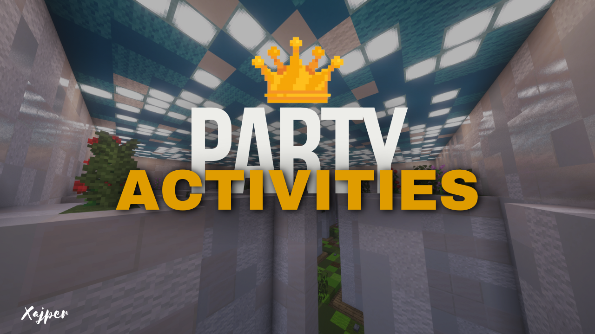

Party Activities
Opis Mapy
Witaj!
Mapa, którą obecnie widzisz, jest zbiorem różnych minigier. Party Activities to moja autorska mapa stworzona dla maksymalnie dwóch graczy na wersję 1.21+! Gier jest wiele, więc na pewno każdy znajdzie coś dla siebie. Budowa tej mapy zajęła mi sporo czasu, więc byłbym wdzięczny, gdybyś ocenił ją poniżej. W razie jakichkolwiek problemów, śmiało napisz do mnie na Discordzie.
Dołącz do mojego serwera Discord, aby uzyskać więcej informacji o przedpremierowych mapach! (https://discord.gg/QCnXbND9UZ)
WAŻNE INFORMACJE:
Nie klikaj wiadomości "Wyjście [KLIKNIJ]" do byle jakiej minigry w dowolnym momencie - każda wiadomość jest przystosowana do danej gry!
Jeśli coś nie działa, pobierz mapę ponownie. Gdy nie działają klikane wiadomości, otwórz świat w LAN i włącz uprawnienia operatora.
Masz pytania lub pojawił się bug? Napisz do mnie na Discordzie (Xajper) lub na moim serwerze.
Galeria